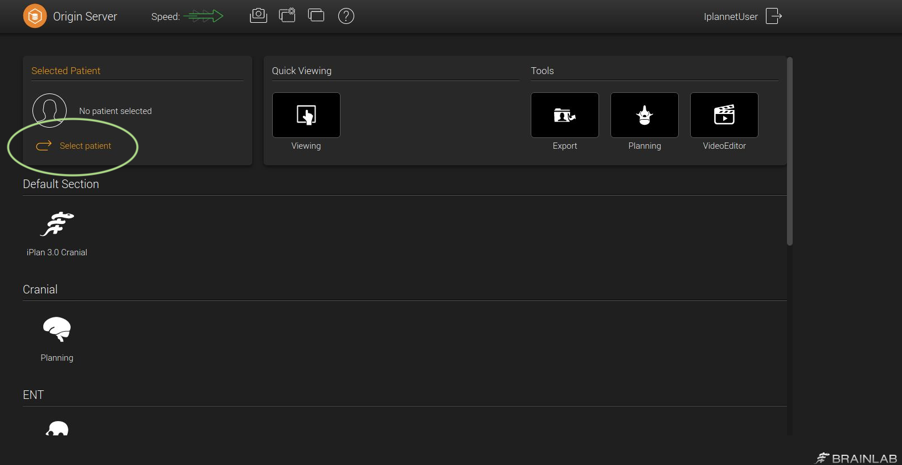
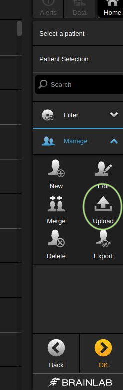

Importing into Brainlab
The output DICOM folder created by Karawun can be imported into Brainlab using the Originserver interface, illustrated below.
First, click “Select patient”
{kind=link}
Use the “Upload” option and select the folder containing all dicoms.
Begin by using anonymised data
The conversion process copies a selection of DICOM tags from a template DICOM file. This means that patient details in the original scan will be copied to the DICOM files created by Karawun.
We recommend anonymising the output when testing Karawun at your
institution. Anonymising, with tools like gdcmanon, will prevent any
chance of interfering with clinical procedures if your Brainlab
instance is in active use. The anonymisation step can be eliminated as
you become comfortable with the process of importing data into Brainlab.
A simple example of anonymisation that we have found sufficient for testing purposes is:
gdcmanon --dumb --recursive --replace 0010,0020,AnonID --replace 0010,0010,AnonID /path/to/karawun/output /path/to/anonymised
This command replaces the patient name (tag 0001,0010) and patient ID (tag 0001,0020) with “AnonID”.